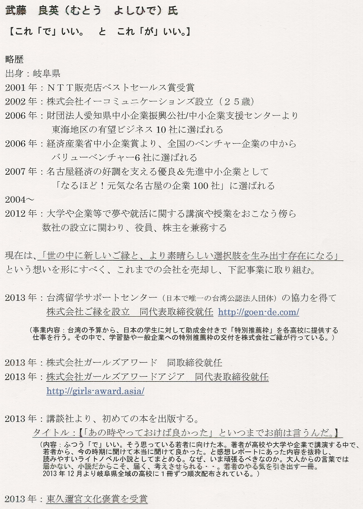

| |
黒田 久美子（くろだ くみこ）氏
「音楽療法って何に ～認知症と音楽療法のかかわり～」
介護老人保健施設 アルカディア
介護福祉士・岐阜県音楽療法士
略歴：
1954年生まれ
1974年 中部女子短期大学幼児教育学科卒業
（現 中部学院大学短期学部）
幼児教育の仕事に就く
1997年 介護老人保健施設アルカディア 開設と同時に入社
2003年 介護福祉士国家資格修得
2003年 岐阜県音楽療法士修得
介護福祉士・主任として仕事をしながら、アルカディアはもちろん介護予防、病院、デイサービス、グループホームなど音楽療法士として普及に努めている。
|
| |


|
|
大村 孝幸（おおむら たかゆき）氏
「技術開発は大変！だけど面白い！」
浜松ホトニクス株式会社 電子管事業部 技術部 設計第1Ｇ
略歴：
昭和42年 静岡県浜松市に生まれる
小中高 甲子園を目指し野球に没頭
高3の夏、静岡県で第5シードを勝ち取るも2回戦敗退
平成3年 千葉工業大学工学部電気工学科卒業
同年 浜松ホトニクス入社 電子管事業部
技術部 設計第1Ｇに配属
光電子増倍管の電子軌道設計を通じ、同増倍管の
設計開発を担当 現在に至る
現在 ハイパーカミオカンデ用光検出器採用を目指し、
20インチＨＰＤを開発中
仕事と家庭を愛し、公私共に充実している46歳
趣味 愛犬クッキーと遊ぶこと、キャンプ、旅行、ロードバイク
メッセージ：はじめまして浜松ホトニクスの大村孝幸です。入社から現在まで、私が携わってきました、光を電子に変換し増幅する
光電子増倍管の電子軌道設計ならびに新規光センサー開発を通じ、技術開発の大変さ、面白さが少しでも伝わればと思います。
|
| |
川原 茂敬（かわはら しげのり）氏
「脳の中にはたくさん人がいる」
富山大学大学院理工学研究部 教授
略歴：
1980年3月 富山中部高等学校 卒業
1984年3月 東京大学薬学部 卒業
1986年3月 東京大学大学院薬学系研究科修士課程 修了
1988年8月 東京大学大学院薬学系研究科博士課程 中退
1988年9月 東京大学薬学部 助手
1993年4月 博士（薬学）取得
2001年3月 東京大学大学院薬学系研究科 助教授
（2002年5月ー2003年3月 米国アリゾナ大学研究員
2007年4月 富山大学大学院理工学研究部 教授
所属学会：日本神経科学会、日本生物物理学会
日本薬学会、米国神経科学会
メッセージ：私たちは一人で考え行動しているように行動しているように思っていますが、実は脳の中では様々な領域がお互いに良く話し合い、緊密な連携プレーをしています。上手に活用すれば能力は格段にアップし、多少の障害を受けても何とかする柔軟性や可能性を持っています。
|
| |
滝 茂夫（たき しげお）氏
「夢をカタチに」
タキヒヨー株式会社 代表取締役会長
略歴：
昭和26年8月18日生（愛知県出身）
昭和42年3月 東海中学校卒業
昭和45年3月 東海高等学校卒業
昭和45年4月 慶應義塾大学法学部入学
昭和49年3月 慶應義塾大学法学部卒業
昭和49年4月 モビリア株式会社入社
昭和59年4月 同社 営業第一部長
昭和61年4月 タキヒョー株式会社入社
平成元年5月 同社 取締役就任
平成2年9月 同社 常務取締役就任
平成5年3月 同社 取締役副社長就任
平成6年3月 同社 代表取締役副社長就任
平成6年5月 同社 代表取締役社長就任
平成23年3月 同社 代表取締役会長就任
平成13年11月～ 名古屋商工会議所 常議員
平成20年6月～ ナゴヤファッション協会 会長
平成21年4月～ 中部経済同友会 代表幹事
平成25年4月～ 中部経済同友会 特別幹事
メッセージ：私にも当社の社員にも、「夢をカタチにする」という志と想いがあります。「消費者の心を豊かにし、より美しくしたい」という「夢」に向かい、失敗と成功を繰り返しながら、新たな挑戦を続け、「モノづくり」に取り組んでいます。
皆さんに、「夢を持ち続けることの大切さと、その実現するためには何が必要なのか」についてお話したいとをしたいと思います。そして、いつか、私の話を思い出していただければ嬉しく思います。
|